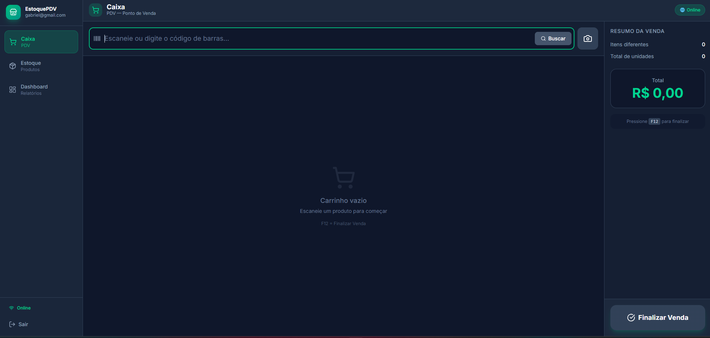
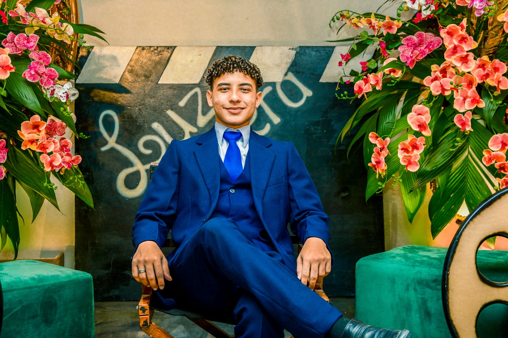

PROJECT / 01
↗
MarketFlow
PDV e estoque offline-first para pequenos comércios, com PWA, sincronização local, scanner por câmera e PIX dinâmico via Mercado Pago.
Construo produtos digitais completos — da interface à infraestrutura — com foco em performance, experiência e escala.

Produtos que combinam desenvolvimento web, integração de APIs, bancos de dados, experiência responsiva e decisões de arquitetura.

PDV e estoque offline-first para pequenos comércios, com PWA, sincronização local, scanner por câmera e PIX dinâmico via Mercado Pago.

Experiência web para uma iniciativa de impacto social, com conteúdo dinâmico, notícias e integração com API hospedada.
Agendamentos, roles, painel administrativo e PIX dinâmico com webhook HMAC.
API Node/Express com JWT, PostgreSQL e loja web com rotas protegidas.
Visualização de impacto com dados do IBGE e conversões sociais baseadas em cobertura populacional.
Frontend, backend, dados, autenticação e infraestrutura para entregar produtos completos.

Geração Tech · IEL / ADECE

Geração Tech

Udemy

Digital College

Formação complementar